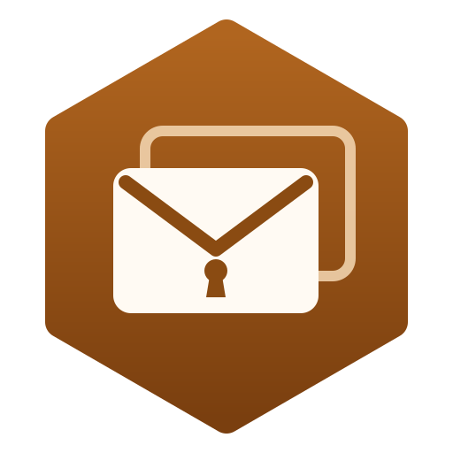

Email AgenticCellOne gateway agent alone touches Gmail. People and agents work on a signed, encrypted twin of the mailbox, kept in an SGit vault.
Architecture
The cell is built around a single rule: only one agent, the gateway, holds the Google token. No other agent and no person's tools talk to Gmail directly.
- The gateway agent is the only holder of the Google token, so it is the only way in and out of Gmail.
- The digital twin is a copy of the mailbox kept in an SGit vault. People and agents read and work on the twin, not on Gmail.
- Signed append lanes carry everything that happens: actions, approvals, reads and the outbox. Each lane only grows, and every entry is signed by whoever wrote it.
The four flows
- ConnectThe user picks a tier on Google's own consent screen: metadata, read, compose, send. Plan.
- ReceiveGmail nudges the gateway; it reads the history, writes the twin, and the firewall writes a cleaned copy. Firewall and twin built (simulation).
- Work togetherPeople and agents read the twin and propose on the actions lane; every read is a signed receipt. Lanes built (simulation).
- SendA person signs, or a signed automation allows; the gateway checks the email policy, sends, and writes the outbox. Decision built (simulation); sending is a plan.
The architecture in full · the twin's vault layout · the lanes
Behaviour policies at five altitudes
- The OAuth grant: which Gmail scopes the user gave. Enforced by Google. Plan.
- Who holds the token: one gateway agent. Plan.
- What each agent may do: read, propose, approve or send, per agent and key, checked on the lanes. Built (simulation).
- What an email may be: recipients, languages, templates, attachments, rates, first contact or reply, data loss. Built (simulation).
- Who approves: a person for consequential sends, a signed automation for routine ones; first contacts always a person. Built (simulation) for the decision.
The checker can say what today's connectors cannot: this agent may send a reply in Portuguese to an existing correspondent, using this template, but never a first contact. After the policy review, an automatic send also needs a verified sender, a fixed template with no free text, and a message the firewall marked clean. The policy in full.
The fifteen features
In build order, those that protect us first: the inbound firewall, data-loss checks, a kill switch, a shared inbox with roles, a policy simulator, templates and voice, approve anywhere, follow-ups, signed outbound mail, vault links, time travel, synthetic recipients, inbox analytics, a calendar twin, and more than Gmail. Five are partly built against the simulated mailbox. Each feature and where it stands.
Build order
- Our own inboxes first: the OAuth app in testing, under RiskMandate's Google project; the gateway and the twin; one mailbox.
- The lanes and the signatures.
- The email policy, checked before every send.
- The CRM app's email component, on the twin.
- The first automated sends, under a signed policy.
- Then the cell, offered to teams, with verification when it leaves testing.
What each step needs from Dinis: the Google OAuth app in testing (setup values), its scopes, and the user's own vault. The vault belongs to the user, who creates it through pki.sgit.ai and grants the gateway an access key: the twin is the user's capture of their mailbox, and so also its backup. We keep no copy.